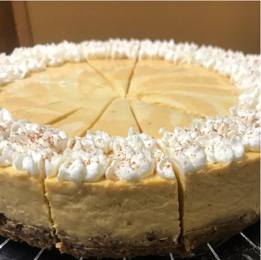

Pumpkin Swirl Cheesecake

Ingredients
- 2 cups broccoli
- 2 cups cauliflower
- 2 large eggs
- 1 cup shredded Cheddar cheese, divided
- ½ cup mayonnaise
- ½ cup chopped onion
- ½ cup butter, melted
- 1 (15 ounce) package seasoned croutons, crushed
Directions
- Step 1: Preheat the oven to 350 degrees F (175 degrees C).
- Step 2: Place broccoli and cauliflower in separate saucepans, cover with water, and bring to a boil; cook until tender, 3 to 4 minutes. Drain and arrange in an 11x7-inch baking dish.
- Step 3: Beat eggs in a bowl until creamy; stir in 1/2 cup Cheddar cheese, mayonnaise, and onion and pour over vegetables. Pour melted butter on top and sprinkle with remaining 1/2 cup Cheddar cheese. Scatter crushed croutons evenly on top.
- Step 4: Bake in the preheated oven until browned and bubbling, about 40 minutes.